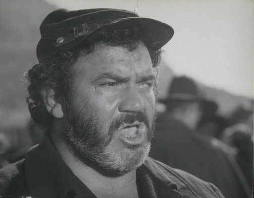

Meine Filme

Darsteller Mario Brega
Alle Darsteller
Nr.
Titel
Jahr
FSK
Minuten
Auflösung
IMDB
Meta
Genre
4376
Auch Engel essen Bohnen
1973
16
125
1080p
6.3 / 10
0
Action
3638
Es war einmal in Amerika
1984
16
251
1080p
8.4 / 10
0
Drama
2558
Für ein paar Dollar mehr
1965
16
132
1080p
8.3 / 10
74
Western
2768
Für eine Handvoll Dollar
1964
16
100
1080p
8.0 / 10
65
Action
10820
Mehr tot als lebendig
1968
16
117
720p
6.4 / 10
0
Action
1922
Mein Name ist Nobody
1973
12
116
1080p
7.5 / 10
0
Komödie
1384
Nobody ist der Größte
1975
12
126
1080p
6.4 / 10
0
Komödie
1379
Sabata kehrt zurück
1971
16
108
1080p
5.8 / 10
0
Western
3807
Von Mann zu Mann
1966
12
114
1080p
7.2 / 10
0
Western
5256
Zwei glorreiche Halunken
1966
16
178
1080p
8.9 / 10
0
Western